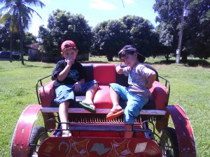
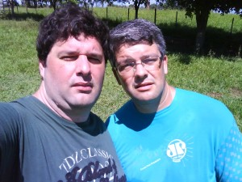
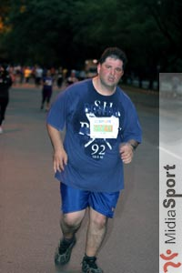

vamo, vamo, vamo…
Posts tagged encontro

Mogi, Mogi, a terra do caqui…
77 years
by Alecão
in Ex-sedentário
Demorei mas finalmente eu vou fazer o post sobre a corrida de Mogi das Cruzes.
Moro em Santo André e para chegar em Suzano (para encontrar o Luciano) levei mais de 1 hora e para ajudar o Google Maps me enganou. Na sequência, eu e o Luciano partirmos para Mogi das Cruzes, cidade vizinha de Suzano, chegamos lá era antes das 8, a largada era apenas as 8:30. E o sol já estava BRILHANDO.

Encontramos por lá o Edson, que manda muito bem na corrida e estava junto com a sua assessoria.


Meus tempos (paces):
- Km 1 – 6:23 – Começamos rápido, principalmente por causa do tumulto da largada, pois logo na largada voltávamos e corremos em volta do Mogi Shopping, “conhecendo o estacionamento”. Logo saímos do estacionamento e cruzamos uma linha férrea, muita curva, iamos pela calçada, pelo meio fio…
- Km 2 – 7:03 – Rítimo já aceitável para mim. E estávamos em subida.
- Km 3 – 7:27 – Um pouquinho de descida.
- Km 4 – 8:05 – Uma outra subidinha. E o sol começa a esquentar o coco. Tava aquele sol ardido. O que salvava era a sombra do muro. Logo viramos a direita e começa uma descida um pouco antes de chegar no 5. Tentando recuperar o rítimo.
- Km 5 – 7:36 – A descida ajudou a recuperar o tempo. Viramos para direita de novo.
- Km 6 – 8:40 – o sol estava nas costas, e a água não mais resfriava meu corpo. Os passos foram ficando pesados e eu falei para o Luciano. “Vai embora”. Ele esta em um rítimo bom e eu não queria atrapalhar. Passei a caminhar rápido. Não tinha sombra, não dava para fugir do calor.
- Km 7 – 8:54 – Além do calor, começa uma subida meio chata, depois conversando com o Luciano, ele me disse que caminhou apenas nesta subida.
- Km 8 – 8:14 – No final da subida, começou a aparecer sombras, minha salvação. Alternava corrida com caminhada, até que um pouco antes da chegada, uma descida, volto a correr, encontro o Edson pouco antes da chegada, dando o maior incentivo.
Terminei a prova com o tempo oficial de 01:02:25 na 776º posição geral e 129º na minha faixa etária.


Para fechar com chave de ouro, tiramos fotos com os “sózias”:


Achando que eu tinha dado tudo nesta corrida, o cansaço maior estava por vir. Levei o Luciano para a casa dele e depois viajei de volta para Santo André, minha mulher me esperava para uma festinha a tarde, tomei um banho super rápido e fomos. Voltando para casa quase as 8 da noite. O Maurício passa mal, vomita, uma, duas, três… fomos para o hospital. Voltei de lá as 23:00 e a Andrea ficou por lá com ele. E fiquei acordado em casa com a Olívia esperando a Andrea me ligar. As 3 da manhã a Olívia vomitou. Corri com ela para o hospital e, com a Andrea, trocamos de filho, voltei para casa com o Maurício e deixei a Olívia e Andrea no hospital. Dormi as 4 da manhã, porque não tinha mais condições, era zumbi em pessoa, 23 horas acordado com direito a uma corrida de 8K. 8 horas a Andrea me liga para buscar ela. 4 horas de sono me ajudaram muito. Fui dormir novamente somente a noite. Graças a Deus as crianças não tiveram recaídas e ficaram ótimas depois das sessões de soro.
Na cabeça!
127 years
by Alecão
in Ex-sedentário
Pois então, na segunda feira, terminei o post dizendo: Vamo, vamo, vamo… Alecão 1h20m na cabeça!
Então… eu consegui fazer a corrida Carrefour Viver 10K em 1h19m30s, como diria a Moça: uhuuuuuuu!
Tudo começou com o relógio despertando a 5 da manhã. Depois de uma noite em que eu não dormi nada. Sabe como é a ansiedade?
Ainda por cima, moro em Santo André e trabalho em São Paulo, portanto em casa só para mim era feriado e não estava motorizado e tive que encarar o buzão até o Ibiriapuera.

")
Já disse que odeio acordar cedo? Acho que ainda não. Pois é. ODEIO! Mas pela corrida vale o sacrifício. O trajeto de buzão e depois metrô. Desci na Ana Rosa. E encarei uma caminhada de 2 Km até o Obelisco (estava inspirado).
Cheguei cedo, por volta das 7h, melhor assim. Morro de ansiedade se chego em cima da hora. Sem nada para fazer fiquei na concentração.
")
")
")
")
Perto da hora da largada, resolvi ir mais para trás, afinal meu pace é baixo e não queria ser atropelado.
")
")
")
Na primeira foto anterior, no canto direito inferior, aparece o Ronaldo, na hora da largada eu vi que o conhecia, mas não confio na minha memória, então deixei pra lá. Foi um colega de trabalho (Adriano) que me disse que seu cunhado havia participado da prova e ai lembrei dele, ele é irmão da responsável pelo RH daqui da empresa. hehehe.
Dado a largada, muito emocionante encarar de cara a Rubem Berta, de suas subidas e descidas, que surpreendem os que debutam ela. Como é minha quarta corrida no mesmo percurso, resolvi subir andando 3 ladeiras e assim me poupar para o final. Já no Km 3 retornamos pela Rubem Berta.
")
")
")
")
Após o Km 5, acabou a Rubem Berta, sabia que a partir dali era só administrar. Quando a surpresa, o “meu herói” apareceu e disse que me acompanharia.
")
Estávamos na metade da prova. Me senti capaz de terminar inteiro. E ainda com meu herói ao lado. Não podia ser melhor. O Thiago disse que fez 8Km antes de entrar no percurso (sim, ele apenas estava treinando). E decidiu correr até o fim da prova ao meu lado, encarando meu slow-running.
Passamos o Km 6 e contei para o Thiago que no ano anterior, imaginava o pórtico no Km 6 e era bem mais para frente. Este ano corrigiram para mais perto e ainda colocaram 6,1Km na hora do pessoal se inscrever. Pelo jeito muita gente reclamou.
No Km 7, houve distribuição de Gel. Muito bom, recarregou as baterias. Pena que foi fazer efeito apenas depois do Km 9.
")
")


Já faltando pouco para a chegada (500 metros), consegui recuperar o rítimo e faltando uns 50 metros consegui dar um sprint tímido. Terminando a prova com o tempo de 1 hora 19 minutos e 30 segundos, baixando o meu tempo de 10K em 6 minutos, que antes era de 1h26.
Minha alegria, foi muito grande. Pois sinto que a cada dia estou melhorando e cada prova vou tendo a confirmação disso. A verdade é que senti que poderia mais e que fui muito cauteloso. Mas melhor assim do que quebrar e ter os sonhos atrapalhados.
")
")
Thiago, valeu pela ajuda. Ter companhia é tudo. Espero um dia poder retribuir.
Para voltar para casa, resolvi subir até a Paulista, mais uns 2 a 3 Km de distância. Entre corrida e caminhada, encarei quase 15Km. Mas valeu a pena, tanto que hoje de manhã, tive vontade de correr. Pena que a logística não permite. Treino só amanhã.
Agora é planejar o próximo desafio. E vamo, vamo, vamo vivendo feliz!!!

Nosso Pedro
87 years
by Alecão
in Ex-sedentário
 E M O C I O N A N T E
E M O C I O N A N T E
Esta é a palavra que define a superação.
Parabéns Sr. Pedro.
E parabéns a todos aqueles que superaram seus limites como eu!
Vídeo reportagem do 5º Desafio da Mata Atlântica
57 years
by Alecão
in Ex-sedentário
Sei, sei… vão dizer… “Mas esta aventura foi faz tempo”.
É o dia-a-dia corrido nosso. Pegar os arquivos, editar, subir para o youtube… leva tempo. Mas ontem tomei coragem e fiz isso tudo.
Rever o vídeo me emocionou. Pois eu estava gripado, tanto que depois da prova tive febre alta e fiquei de molho.
Adorei lembrar da largada, da dificuldade, da visão linda da serra do mar, da paisagem postal, do Enio dos Baleias nos esperando na chegada, do chocolate quente, do brinde (tim-tim)…

5º Desafio da Mata Atlântica – 2ª Parte
97 years
by Claudião
in Ex-sedentário
Quem estiver chegando agora, não deixe de ver o post anterior, onde há a impressão do Alex e as fotos, cuja maioria completa o sentido das que postarei agora.
Antes de tudo, parabenizo o meu grande parceiro Alecão, que com gripe e tudo mandou ver na Serra. Sua caminhada foi 10 e o seu espírito 1000. Com você foi tudo mais mágico, primão: eu te amo!
O dia não poderia ter sido mais especial. Durante a semana eu ameacei várias vezes vir aqui chorar a minha fraquesa e os quilos que só fazem aumentar. Mas em vez disso eu decidi sorrir na Serra.
A prova foi maravilhosa, com uma organização muito boa, diante de toda a logística envolvida. Desce-e-sobe de atletas e volumes, tudo pela Rodovia Anchieta. Sobe-e-desce de motoqueiros, pela própria pista, atentos e dipostos a ajudar a quem precisasse. Sou só elogios.


Muitos já foram os comentários. Todos efusivos que me deixam muito emocionado. Não tenho palavras para expressar a felicidade que sinto por tanto carinho e consideração com quem não tem o corpo de atleta amador. Sinto-me honrado pelo reconhecimento do “amador” que sou da atividade, interatividade e festividade com algo que é realmente bom. O corredor amigo que há muito nos acompanha no blog, Sandro Guedes, foi logo comentado sobre o nosso incentivo a galera. Valeu Sandro!!!!
Na prova, fomos nós mesmos, brincalhões. Atazanamos a todos. E o sorriso de aprovação não tem preço. Eu desejo muito que as pessoas que conhecemos venham até aqui resgatar as imagens e principalmente receber nosso caloroso abraço e consideração.
O Enio, coitado, foi pego no laço pelo Baleia Mor – Miguel Delgado – e preso com peia firme. E não ratiou, gostou até. O cara é um Santo. Já é amigo, viu. Sorte ou sina? O tempo lhe dirá… Se eu já sonhava maratonar por aí, sua história, incentivo e disposição para ajudar/participar, só fizeram aumentar esse sonho. Eu vou diminuir minhas recaídas, vou parar de aparecer mais gordo e mais magro em cada fotografia, e vou no caminho certo. Não foi apenas um encontro de Ex-Sedentários Baleias com integrante Baleia. Foi uma junção mesmo de amizade muito bacana. Valeu Miguel!


Sobre as pessoas da prova. Muitas me marcaram. Eu não sou sensitivo nem nada que o valha. Mas quando o Sr. Ítalo aproximou de mim com aquele sorrisão, senti uma energia muito forte, muito positiva. Senti como se meu pai tivesse aparecido ali. Senhor de 70 anos, com uma felicidade incrível fazendo aquele maravilhoso passeio junto do Filho, Ricardo, celebração pura. Além dele, inesquecível a imagem da Senhora Rosana. A felicidade dela se aproximando da chegada foi espetacular. São as duas imagens de força e felicidade que eu registrei para mim, e em fotografias (tomara que eles as encontrem por aqui).


Além deles houve as pessoas como nós, que se divertiram conosco e nos acolheram com a primeira olhada. Nas fotos se vê os Dundes (Claudio e Alex) e o Duendes da Serra. As Garotas Super Cor-de-Rosas, super simpáticas e super atletas, da equipe Lamartine: Heleni, Solange e Rosa. Eu espero vê-las muitas outras vezes.


Tirei muitas fotos bonitas do Cesar Conforti, que subiu decidido todo o percurso não demorando para deixar-nos para trás. Parabéns a você e a Helga (as fotos de vocês ficaram legais demais).


Outro abraço para a Vanessa e Luciana, troca de máquinas, fotos e poses e muitos sorrisos. Enfim, foi tudo muito maravilhoso e com certeza estou cometendo o grave pecado do esquecimento. Perdoem-me os não citados. Ah, engraçada demais a cena da Tomiko entre mim e o Alecão. Ela virou um cisquinho.
Mais uma vez agradeço ao trabalho técnico do Alecão que cuidou de todas as fotografias aqui.


Cobertura Maratona SP 2010
28 years
by Alecão
in Ex-sedentário
Ontem, eu não participei da corrida, mas fiz questão de documentar esta prova.
Fiz isso através do vídeo abaixo:
Fiquei queimadinho do sol, culpa desta pele rosada que eu tenho.
Queria ter filmado a chegada do Thiago mas não deu… Família no pé me ligando, já viu?
Encontrei com o Claudio, que estava radiante e tirei algumas fotos:


Enquanto isso no interior…
108 years
by Claudião
in Ex-sedentário
Enquanto todos os amigos de blogs e equipe estiveram tomados com eventos especiais neste final de semana, os ex-sedentários Alecão e Claudião estiveram no interior de São Paulo (Presidente Prdente/Regente Feijó/Indiana) para uma festão em família: a primeira depois da morte dos nossos avós.
Sábado: O Alecão chegou antes na casa da minha mãe em Regente, às 23:30 horas da sexta-feira. O resto da patota, incluindo que este escrevinhador, chegou no sábado cedo.
Depois de uma noite mal dormida num ônibus (sete horas de viagem) e um café maravilhoso com pães confeitados pela minha mãe, Alecão e Rafael toparam fazer um treininho no calorão brabo de Presidente Prudente.
Foram 4 quilômetros, ou algo em torno disso, com direito a umas voltinhas numa pista de atletismo de um campo de futebol. Até tentei fazer uns pliométricos os quais o Rafel os chamou de epiléticos. Pela aparência tosca com que os executei talvez fosse a melhor designação mesmo.
Depois do treino, um banhão e tivemos de encarar uma MARATONA de churrasco que durou a tarde toda.

O Alecão depois do Treino. Parabéns, Alecão, que venham os nossos próximos treinos juntos!


Fotos do problemão que tivemos de enfrentar. O que fizemos com galhardia. Mas não foi fácil, não! Pra descer toda essa carne com o calor que estava fazendo foi preciso muita coragem e muita cerveja.
Domingo:
Antes da continuação da festa que iria domingão afora, fomos no sítio dos nossos avós. Aproveitando a oportunidade em que meu e filho e outros andariam de charrete com meu pai, participei de um desafio. As fotos ilustram como ele foi:

Os pilotos dos desafio: Dante e Henrique (meu filho), prontos para detonarem comigo.

O DESAFIO: o ANIMAL contra a ÉGUA (puxando uma charrete com duas crianças e dois adultos)

O Alecão me consolando por ter aberto o bico já no quarto quilômetro do desafio/treino.
Foi um treino muito divertido, justo no local onde passei minha infância e junto do meu filho e do meu pai.
Depois disso, mais churrasco. Sete horas de ônibus. Uma soneca e tudo de volta a mais perfeita normalidade onde se inclui a maldita, tormentosa e cuel DIETA.
Feliz Natal – correndo
28 years
by Alecão
in Ex-sedentário
Sábado passado eu, Claudio, Thiago e Paula, encaramos a prova de natal da Corpore. Foram 6 km que eu encarei correndo o tempo todo (ou quase).
Foi um desafio e tanto, pois não tive uma semana legal, encarando alguns medos interiores, mas a corrida veio e revitalizou meus pensamentos. E que venha os desafios!
Desta vez a minha família estava lá. Minha mulher torcendo por mim e meus filhos vendo o papai correr. Coitados, foram na esperança de ver o “Show da Turma da Mônica” e apenas viram a Mônica mandando beijinhos e distribuindo alguns abraços. Posso dizer que isso faz a total diferença. Motiva saber que eles estarão na linha de chegada esperando a gente.
Largamos, eu, Claudio, Thiago e Paula. No primeiro quilômetro eu acompanhei quanto pode, tanto que fizemos em pouco mais de 7 minutos. Mas a partir de ai, percebi que estava puxado e falei para o Claudio que iria diminuir o rítimo. Segundo quilômetro em 8 minutos e diminuindo… Mesmo porque para chegar no terceiro quilômetro, foi necessário encarar a subida que tem após o portão do IPT. Nesta subida senti o fígado e sugeri ao Claudio para continuar o rítimo enquanto eu caminhava para recuperar, foram 200m e logo chegamos no topo e depois era descida e plano apenas… Não parei e consegui acelerar um pouco no final antes de cruzar a linha de chegada. Muito legal, muito emocionante, muito tudo.
Na chegada, o Claudio disparou e correu até a galera pegando o Henrique e o Maurício no colo. Vi que ele queria me dar o Maurício, mas no estado que estava não iria conseguir segurá-lo e ele acabou cruzando com os dois no colo. Foi bem emocionante.
Thiago e Paula, cruzaram a chegada ao tempo de 45 minutos de prova (aproximadamente).
Eu e o Claudio cruzamos com 55 minutos.
Quero mais!


Cheguei
118 years
by Alecão
in Ex-sedentário
 Pensei muito para escolher o título deste post, mas a única coisa que veio a cabeça foi a palavra “Cheguei”.
Pensei muito para escolher o título deste post, mas a única coisa que veio a cabeça foi a palavra “Cheguei”.
Pois é, cruzei a linha de chegada após 10 quilômetros.
Na largada tudo é muito emocionante, aquele mar de gente com camisa azul. Depois foi 1, 2, 3 quilômetros… cansando… 4… e me deu hiperventilação, foi uma sensação muito estranha e continuei andando a passos largos e rápidos, sempre ditados pelo Claudio que me acompanhou o tempo todo, mesmo tendo folego para ir a frente.
Ai por diante foi alternância entre corrida e caminhada, mais caminhada que corrida. Meu corpo aguentava mas minha respiração não… Parecia ser impossível a chegada. No quilômetro 7 consegui até uma boa arrancada e finalmente CHEGUEI. E tem até um vídeo para mostrar isso.
A maior alegria foi ter o apoio do Claudio o tempo todo do meu lado, falando, incentivando, torcendo e me envergonhando 🙂 . E o abraço na linha de chegada foi o dos melhores.
Consegui, consegui, consegui, consegui, consegui… eu Cheguei…
O blog está show
48 years
by Claudião
Não treinei segunda, nem terça, nem quarta.
Segunda foi meu níver, de segunda eu não treino mesmo, em aniversário ainda. Mas no domingo, como bem relatado pelo Alecão, foi show de bola.
Sobre domingo, foi o nosso segundo treino juntos. Pelo blog tentamos empurrar um ao outro, de longe. Mas para sair à Rua, é na base da força de vontade, com a qual todos que leêm este blog também podem contar.
Terça o relógio tocou de madrugada, mas não fui capaz de levantar. Coisa feia Claudio. Todo mundo está lendo isto. Não tem vergonha?
Quarta-feira cheguei do curso meia-noite, com muita vontade de sair pra rua, mas contive esta vontade, graças a lembrança da leitura do livro do Nuno Cobra, que o Alecão não lê mesmo comigo atazanando-o.
Hoje, quinta-feira, levantei às 04:35 horas. E parti pra rua, jurando que ia ter a companhia da lua quase cheinha. Ledo engano. Ela já tinha se recolhido, mesmo com o céu limpíssimo. Quarenta e cinco minutos de lerdeza mórbida pelas ruas próximas de casa. Mas uma lerdeza muito proveitosa para mim.
Quando chego em casa a Mari já esta de pé e, perplexa, exclama como fui capaz de sair pra rua sem nenhuma bermuda normal cobrindo a de ciclista – que uso para não escanificar o lado interno das coxas. Respondi: Simples, amor, às cinco da matina só estou eu na rua, dono dela, e quem me vir terá mais é que correr mesmo, nem que se for de medo!
O nosso blog está show de bola, graças ao Alecão. Os comentários estão cada dia mais numerosos e bacanas. Obrigado e continuem comentando. Não imaginam como eles nos empurram na direção certa.
Alecão, parabéns pelo seu grande salto de evolução. Considere o treino de ontem como a sua primeira grande massagem no coração. Vamos fortalecer nossos corações para gozarmos plenamente as emoções que virão por aí.
.jpg "DSC01727 (1024x576)")
.jpg "DSC01895 (576x1024)")
.jpg "DSCN5637 (1024x768)")


{kind=link}
{kind=link}
{kind=link}
{kind=link}
{kind=link}
{kind=link}
{kind=link}
{kind=link}
{kind=link}
{kind=link}
Últimos comentários